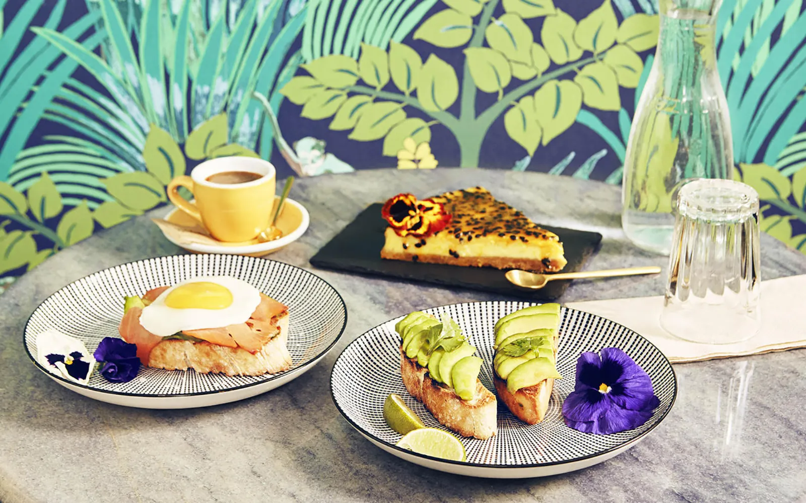

In Italia la colazione è soprattutto bevanda + dolce spesso, in genere caffè espresso o cappuccino con cornetto o brioche ripieni di crema pasticcera o Nutella.
In Francia la colazione si chiama petit déjeuner, fatta con una bevanda (caffè, tè, cioccolata calda o succo di frutta) accompagnata da pane e burro, croissant o brioche alla confettura di vario tipo.

In Spagna la colazione si chiama desayuno e consiste in genere in café con leche (caffellatte) con varie portate, sia dolci, come churros fritti, che salate, come il tostada con tomate, ovvero un toast al pomodoro (o al prosciutto).
Pane fresco (di grano o di mais) insaporito con burro, formaggi, prosciutto o marmellata è l’ingrediente più tipico della colazione in Portogallo, che si chiama pequeno almoço o café da manhã: che fa riferimento alla bevanda più consumata, il caffè.

In Svizzera si consuma di solito qualcosa di veloce ma abbondante come il birchermüesli, miscela di avena con frutta e noci con yogurt denso. Mentre nel fine settimana il brunch svizzero, con roesti (frittelle di patate), formaggi e salumi, ma soprattutto lo zopf, un pane all’uovo.
In Germania si chiama frühstück e vede la presenza dei wurst locali, servita in genere a buffet, con affettati, formaggi, pane e panini (compresi i pretzel), ma anche frutta fresca, uova alla coque e condimenti come la marmellata fatta in casa.

La colazione salata di Inghilterra e Regno Unito, che comprende uova, salsiccia, pancetta, fagioli, funghi, pane tostato, porridge, pomodori cotti e, naturalmente, una tazza di tè.

È varia la colazione diffusa in Grecia (πρωινό), può includere uova sode, salumi e pane con feta, pomodori e olio d’oliva, ma anche dolcetti e soprattutto il tradizionale yogurt greco, solitamente servito con noci e miele.
La colazione in Australia più famosa prevede pane e Vegemite, una crema salata fatta di estratto di lievito dal gusto sorprendente.
Nei Paesi Scandinavi la colazione si fa spesso con una sorta di tartina, che mette sul pane una crema spalmabile, e un topping a base di pesce stagionato, salumi, formaggi, verdure e/o uova sode.

In Polonia per colazione c’è il kanapki, fette di pane o panini insaporiti con affettati, creme spalmabili di carne, salsiccia kielbasa, formaggi, pomodori, uova strapazzate con salsiccia.

In Turchia la colazione si chiama kahvalti e mette insieme pane, formaggi, olive, pomodori, cetrioli, salsiccia turca piccante, menemen (uova in padella), marmellate, confetture e mieli, con i famosi tè e caffè del Paese.

In Brasile a colazione si mangiano pao de queijo, panini al formaggio, o bolo de fuba, una torta agrodolce dalla consistenza umida e cremosa che deriva dall’aggiunta di parmigiano grattugiato e cocco grattugiato.
Il piatto più famoso della colazione in Costa Rica si chiama gallo pinto, riso e fagioli saltati in padella aromatizzati con peperoncino, coriandolo, cipolla e qualche goccia della tipica Salsa Lizano, che si serve accanto a uova, avocado, o formaggio.

In Israele, la colazione include frutta, verdura e grassi sani e può ad esempio prevedere olive, formaggio, verdure, pane e succhi di frutta freschi.